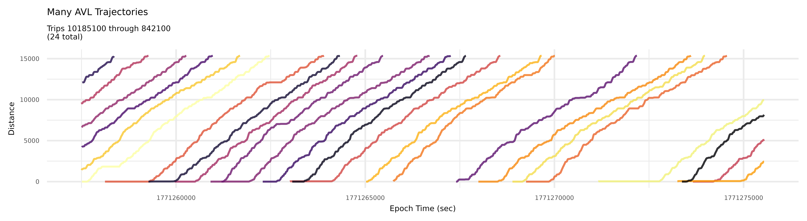
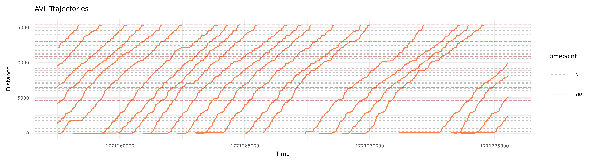
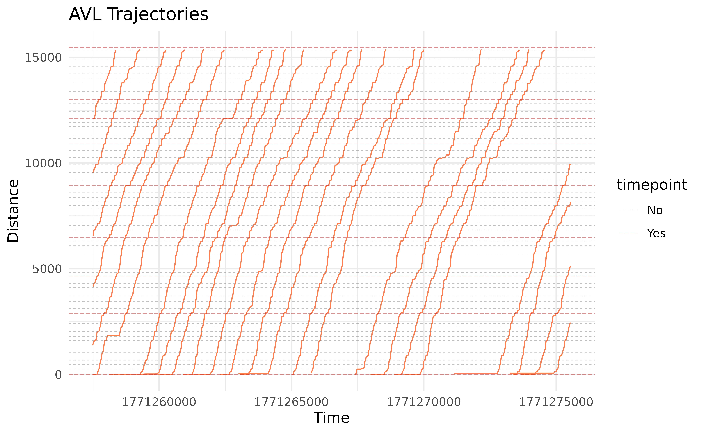

Introduction
In the previous vignette, we saw how we can use
transittraj to clean our AVL data. We took care of
outliers, deadheading trips, noise and non-monotonic observations, and
more. In this vignette, we’ll apply the cleaned data
(c53_mono) to fit a trajectory function.
Let’s begin by loading the library we’ll be using:
Fitting a Trajectory Curve
Our ultimate goal is to fit an interpolating curve describing the
position of a transit vehicle at any point in time. Ideally, we could
fit an inverse curve, giving us the time the transit vehicle passes any
point in space. We can do both using
get_trajectory_fun().
transittraj supports many different methods for fitting
these functions. The simplest is linear interpolation without an
inverse. If this is all you need, you can probably skip many of the
cleaning steps from the previous vignette. For more fine-grained
analyses, though, we recommend fitting a velocity-informed piecewise
cubic interpolating polynomial. This uses the speeds and distances,
correct for monotonicity, to fit a cubic spline between each
observation. By default, get_trajectory_fun() will fit this
type of interpolating curve (interp_method = "monoH.FC" and
use_speeds = TRUE).
Using the data we cleaned in the previous vignette, let’s finally fit our trajectory functions:
c53_traj <- get_trajectory_fun(distance_df = c53_mono,
interp_method = "monoH.FC",
use_speeds = TRUE,
find_inverse_fun = TRUE)And that’s it! Once your data is cleaned, fitting the trajectory is quick and easy; we’ve already done most of the heavy lifting.
Exploring the Trajectory Object
transittraj stores the fit curves in a special object
class. This object stores a list of fit trajectories, one for each trip,
as well as the time and distances ranges for each trip. We can use
summary() to take a look inside the object:
summary(c53_traj)
#> ------
#> AVL Group Trajectory Object
#> ------
#> Number of trips: 24
#> Total distance range: 0 to 15370.75
#> Total time range: 1771257490 to 1771275553
#> ------
#> Trajectory function present: TRUE
#> --> Trajectory interpolation method: monoH.FC
#> --> Maximum derivative: 3
#> --> Fit with speeds: TRUE
#> Inverse function present: TRUE
#> --> Inverse function tolerance: 0.01
#> ------You’ll notice the summary also contains information about the parameters we used to fit the curve.
Interpolating
How do you use the fit curve to actually interpolate at new points?
We recommend using predict(), as this will ensure that the
curves aren’t used to extrapolate beyond the range of each trip. Using
predict(), there are three main values we can interpolate
for: time from distances (requires an inverse function), distances from
times, and speeds from times (requires a spline).
Interpolating for Times
One of the most common applications of the fit trajectory curve is to
find the time at which each vehicle passed a point along its route. To
do this, we’ll use predict() with the
new_distances parameter. We’ll begin by finding the
distance of each stop along the route using
get_stop_distances():
# First, use stop_times to find which stop_ids are timepoints
c53_timepoints <- c53_gtfs$stop_times %>%
distinct(stop_id, timepoint)
# Now, find stop distances and join the timepoints column
c53_stops <- get_stop_distances(gtfs = c53_gtfs,
shape_geometry = c53_shape,
project_crs = dc_CRS) %>%
left_join(y = c53_timepoints,
by = "stop_id") %>%
left_join(y = (c53_gtfs$stops %>% select(stop_id, stop_name)),
by = "stop_id") %>%
select(-shape_id) %>%
mutate(timepoint = if_else(condition = (timepoint == 1),
true = "Yes",
false = "No"))
head(c53_stops)
#> # A tibble: 6 × 4
#> stop_id distance timepoint stop_name
#> <chr> <dbl> <chr> <chr>
#> 1 2584 677. No Alabama Av SE+15 Pl SE
#> 2 2609 880. No Alabama Av SE+Stanton Rd SE
#> 3 2683 1155. No Alabama Av SE+18 Pl SE
#> 4 2793 1605. No Alabama Av SE+22 St SE
#> 5 2811 1807. No Alabama Av SE+24 St SE
#> 6 2867 2037. No Alabama Av SE+Jasper St SENow that we have some distances, let’s interpolate using
predict():
c53_stop_crossings <- predict(
object = c53_traj,
new_distances = c53_stops
)
head(c53_stop_crossings)
#> # A tibble: 6 × 6
#> stop_id distance timepoint stop_name trip_id_performed interp
#> <chr> <dbl> <chr> <chr> <chr> <dbl>
#> 1 2584 677. No Alabama Av SE+15 Pl SE 10185100 1.77e9
#> 2 2584 677. No Alabama Av SE+15 Pl SE 10249100 1.77e9
#> 3 2584 677. No Alabama Av SE+15 Pl SE 1306100 1.77e9
#> 4 2584 677. No Alabama Av SE+15 Pl SE 13437100 1.77e9
#> 5 2584 677. No Alabama Av SE+15 Pl SE 13478100 1.77e9
#> 6 2584 677. No Alabama Av SE+15 Pl SE 1699100 1.77e9And now we have the crossing time (labeled interp) at
each stop, for each trip! The interpolated times are in seconds of epoch
time.
Interpolating for Distances
Let’s say you want to know where every vehicle is at a certain point
in time. We can do that by providing new_times to
predict(). Let’s see below:
c53_time_interp <- predict(
object = c53_traj,
new_times = c(1771265000, 1771275000)
)
print(c53_time_interp)
#> event_timestamp trip_id_performed interp
#> 1 1771265000 1306100 8933.8531
#> 2 1771265000 18298100 10899.0966
#> 3 1771265000 21499100 4006.3031
#> 4 1771265000 21555100 13912.1101
#> 5 1771265000 22663100 6944.8919
#> 6 1771275000 10185100 2883.3087
#> 7 1771275000 10249100 7986.3226
#> 8 1771275000 13478100 140.0436
#> 9 1771275000 3597100 6792.4405Here, interp will be the distance in meters from the
route’s beginning. You’ll notice that, even though we have 24 trips,
there were only four to five distance for each timepoint. This is
because predict() will only interpolate a distance for
trips that were actually running at that point in time.
Interpolating for Speeds
The last thing we can interpolate for is the speed at any given point
in time. We can control this by setting the deriv parameter
in predict():
c53_speed_interp <- predict(
object = c53_traj,
new_times = c(1771265000, 1771275000),
deriv = 1
)
print(c53_speed_interp)
#> event_timestamp trip_id_performed interp
#> 1 1771265000 1306100 1.675073e-01
#> 2 1771265000 18298100 1.464849e+00
#> 3 1771265000 21499100 1.372977e+01
#> 4 1771265000 21555100 6.424041e-01
#> 5 1771265000 22663100 1.508816e+00
#> 6 1771275000 10185100 4.473051e-01
#> 7 1771275000 10249100 4.354498e-05
#> 8 1771275000 13478100 7.213864e-01
#> 9 1771275000 3597100 9.079446e-01Here, interp will be the speed in meters per second.
Finding speeds requires starting from time values.
Visualizing Trajectories
Quick Plots
Now its time for the really fun part – plotting our
trajectory curves. We can use plot() to generate a quick
and easy plot of all trajectories:
plot(c53_traj)
plot() is intended for quick visualizations of
trajectories, and as such does not allow for much customization. In the
next section, we’ll use plot_trajectory() to create more
interesting plots.
Detailed Trajectories
To add features (such as stops) and customize formatting, we
recommend using plot_trajectory(). This function starts of
similar to plot(), taking a trajectory object. After that,
you can add a dataframe of feature distances, such as the
c53_stops we made ealier. Finally, formatting can be
controlled using mapping dataframes. The colors and linetypes of both
trajectories and features can be mapped to attributes using something
similar to what is below:
stop_formatting <- data.frame(timepoint = c("Yes", "No"),
color = c("firebrick", "grey50"),
linetype = c("longdash", "dashed"))For mapping dataframes, at least one column must match the layer
being mapped to (trajectories or features). The other columns must be
color and/or linetype, telling
transittraj which feature they describe.
We can plug all that in to plot_trajectory() to generate
our formatted plot:
traj_plot <- plot_trajectory(
trajectory = c53_traj,
feature_distances = c53_stops,
feature_color = stop_formatting,
feature_type = stop_formatting,
feature_width = 0.2, feature_alpha = 0.5,
traj_width = 0.4, traj_alpha = 1
)
traj_plot
Check out help(plot_trajectory) for a full discussion of
the plotting features available.
The benefits of the fitting
am_lims <- c(13900, 14600)
traj_plot2 <- plot_trajectory(
trajectory = c53_traj,
feature_distances = c53_stops,
feature_color = stop_formatting,
feature_type = stop_formatting,
feature_width = 1, feature_alpha = 0.8,
traj_width = 0.6, traj_alpha = 0.6,
traj_color = "firebrick",
center_trajectories = TRUE,
distance_lim = am_lims
)
traj_plot2
Line Animations
Another fun way to visualize transit vehicle trajectories is to
animate them. Use plot_line_animation() to animate
vehicles, as points, moving along a straight line that represents the
route.
The formatting process works very similarly with
plot_line_animation() as it does with
plot_trajector(). For this plot, we’ll also set some
distance limits to zoom in to the Florida Ave-U St corridor of the
route.
stop_formatting <- data.frame(timepoint = c("Yes", "No"),
outline = c("red1", "grey30"),
shape = c(22, 21))
florida_U_lims <- c(9500, 15500)
focus_trips <- unique((c53_mono %>%
arrange(event_timestamp))$trip_id_performed)[17:20]Now we can generate our line animation. We’ll use the field
label_field to tell the function to label each stop point
with the stop_name column in c53_stops:
line_anim <- plot_animated_line(
# Add trajectory & feature data
trajectory = c53_traj, feature_distances = c53_stops,
distance_lim = florida_U_lims, plot_trips = focus_trips,
# Format features
feature_outline = stop_formatting,
feature_shape = stop_formatting,
feature_size = 2, feature_stroke = 1.25,
# Add labels
label_field = "stop_name",
label_pos = "right", label_size = 2,
# Format route & vehicles
route_color = "indianred2",
veh_alpha = 0.9, timestep = 1
)
line_animMap Animations
The final visualization we’ll make is an animated map. The concept is similar to the animated line we saw above, but instead of simplifying the route, we’ll draw it spatially and show the vehicles traveling through the city.
This function has formatting and feature options very similar to the previous two visualization functions.
map_anim <- plot_animated_map(
# Add trajectory, shape, & feature data
trajectory = c53_traj,
shape_geometry = c53_shape, feature_distances = c53_stops,
# Format features
feature_outline = stop_formatting,
feature_shape = stop_formatting,
feature_size = 1.25, feature_stroke = 1,
# Format route
route_color = "indianred3", route_width = 2,
bbox_expand = 700
)
map_anim